Chapter6 Sorting¶
ADT定义¶
void X_Sort ( ElementType A[ ], int N )
/*N是一个合法整数，为了方便会假设A为整数数组；` > `和` < `操作符存在，并且是唯一允许对输入数据进行的操作；只考虑内部排序*/
插入排序¶
void InsertionSort ( ElementType A[ ], int N )
{
int j, P;
ElementType Tmp;
for ( P = 1; P < N; P++ )
{
Tmp = A[ P ]; /* the next coming card */
for ( j = P; j > 0 && A[ j - 1 ] > Tmp; j-- ) A[ j ] = A[ j - 1 ];
/* shift sorted cards to provide a position for the new coming card */
A[ j ] = Tmp; /* place the new card at the proper position */
} /* end for-P-loop */
}
时间复杂度：
- worst case - \(O(N^2)\)
- best case - \(O(N)\)
简单排序复杂度的下限¶
定义逆序对（inversion）为具有i < j但A[i] > A[j]性质的任意有序对(i, j) \(\rightarrow\) 一次（相邻）交换只能消除一个逆序对，排序的过程就是消除逆序对的过程
\(T ( N, I ) = O(I+N)\) where I is the number of inversions in the original array.
由best和worst的情况可得：average case 的时间复杂度是\(N(N-1)/4\)
任何通过交换相邻元素进行排序的算法需要\(\Omega(N^2)\)的时间
希尔排序 - Shellsort¶
隔n个数取一个的多轮插排，一次交换可以消除多个逆序对；最后一轮就是1-sort（插排），保证结果正确性。

void Shellsort( ElementType A[ ], int N )
{
int i, j, Increment;
ElementType Tmp;
for ( Increment = N / 2; Increment > 0; Increment /= 2 )
/*h sequence */
for ( i = Increment; i < N; i++ )
{ /* insertion sort */
Tmp = A[ i ];
for ( j = i; j >= Increment; j -= Increment )
if( Tmp < A[ j - Increment ] )
A[ j ] = A[ j - Increment ];
else
break;
A[ j ] = Tmp;
} /* end for-I and for-Increment loops */
}
时间复杂度不好分析，是用一种看似复杂的方法减少了交换次数
- worst case: \(\Theta(N^2)\)

- 没有严格要求一定要取prime number
- 优化：考虑no common factors，取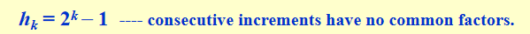
- 优化后的worst case: \(\Theta(N^{3/2})\)
- 优化后平均时间复杂度: \(O(N^{5/4})\)

大规模数据queue sort更好用，小规模数据shell sort或者insertion sort更好用，并且在面对大规模数据的时候也会执行cut off使其变成多块小规模数据然后执行shell sort/ insertion sort
堆排序 - Heapsort¶
Algorithm 1:
{
BuildHeap( H ); /* O( N ) */
for ( i=0; i<N; i++ )
TmpH[ i ] = DeleteMin( H ); /* O( log N ) */
for ( i=0; i<N; i++ )
H[ i ] = TmpH[ i ]; /* O( 1 ) */
}
\(T(N)=O(NlogN)\)
缺点：空间复杂度doubled
Algorithm2: 建最大堆
建完一个最大堆之后原地排序，不需要再开一个数组
void Heapsort( ElementType A[ ], int N )
{
int i;
for ( i = N / 2; i >= 0; i - - ) /* BuildHeap */
PercDown( A, i, N );
for ( i = N - 1; i > 0; i - - )
{
Swap( &A[ 0 ], &A[ i ] ); /* DeleteMax */
PercDown( A, 0, i );
}
}
Average Time Complexity: \(2NlogN-O(NloglogN)\)
缺点：实际操作过程中读内存次数太多了，耗时并没有理论那么少
归并排序 - Mergesort¶
归并两个有序数组¶
 \(T(N) = O(N)\)
\(T(N) = O(N)\)
分治法实现归并排序¶
void MSort( ElementType A[ ], ElementType TmpArray[ ], int Left, int Right )
{
// 数据划分
int Center;
if ( Left < Right )
{
/* if there are elements to be sorted */
Center = ( Left + Right ) / 2;
MSort( A, TmpArray, Left, Center ); /* T( N / 2 ) */
MSort( A, TmpArray, Center + 1, Right ); /* T( N / 2 ) */
Merge( A, TmpArray, Left, Center + 1, Right ); /* O( N ) */
// If a TmpArray is declared locally for each call of Merge, then S(N) = O(NlogN)
}
}
void Mergesort( ElementType A[ ], int N )
{
ElementType *TmpArray; /* need O(N) extra space */
TmpArray = malloc( N * sizeof( ElementType ) );
if ( TmpArray != NULL )
{
MSort( A, TmpArray, 0, N - 1 );
free( TmpArray );
}
else FatalError( "No space for tmp array!!!" );
}
/* Lpos = start of left half, Rpos = start of right half */
void Merge( ElementType A[ ], ElementType TmpArray[ ], int Lpos, int Rpos, int RightEnd )
{
int i, LeftEnd, NumElements, TmpPos;
LeftEnd = Rpos - 1;
TmpPos = Lpos;
NumElements = RightEnd - Lpos + 1;
while( Lpos <= LeftEnd && Rpos <= RightEnd ) /* main loop */
if ( A[ Lpos ] <= A[ Rpos ] ) TmpArray[ TmpPos++ ] = A[ Lpos++ ];
else TmpArray[ TmpPos++ ] = A[ Rpos++ ];
while( Lpos <= LeftEnd ) /* Copy rest of first half */
TmpArray[ TmpPos++ ] = A[ Lpos++ ];
while( Rpos <= RightEnd ) /* Copy rest of second half */
TmpArray[ TmpPos++ ] = A[ Rpos++ ];
for( i = 0; i < NumElements; i++, RightEnd-- )
/* Copy TmpArray back */
A[ RightEnd ] = TmpArray[ RightEnd ];
}
复杂度分析¶
\(T(1) = 1\)
\(T(N) = 2T(N/2)+O(N)=2^kT(N/2^k)+k*O(N)=N*T(1)+logN*O(N)=O(N+NlogN)\)
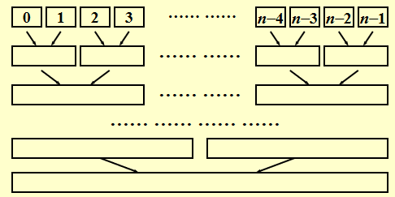
非递归实现：自己划分，分到单独一块为止，直接执行合并
归并排序需要线性的额外内存，复制数组的速度很慢。它很少用于内部排序，但对于外部排序非常有用。
内部排序与外部排序比较¶
| 特性 | 内部排序 | 外部排序 |
|---|---|---|
| 数据位置 | 内存中 | 外部存储设备上 |
| 数据量 | 小到中等 | 非常大 |
| 速度 | 快 | 慢（由于磁盘I/O） |
| 算法举例 | 快速排序、堆排序等 | 外部归并排序 |
| I/O操作 | 较少 | 频繁 |
| 使用场景 | 内存可以容纳全部数据 | 内存无法容纳全部数据 |
算法稳定性¶
稳定排序的概念：能保证排序前2个相等的数其在序列的前后位置顺序和排序后它们两个的前后位置顺序相同
选择排序、快速排序、希尔排序、堆排序不是稳定的排序算法；而冒泡排序、插入排序、归并排序和基数排序是稳定的排序算法。
快速排序 - Quicksort¶
现有排序算法中实际最快的
算法核心：选支点，分成左小右大两部分；一次至少排好一个数（支点）
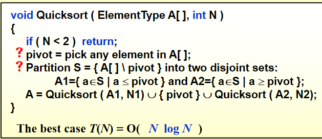
e.g. 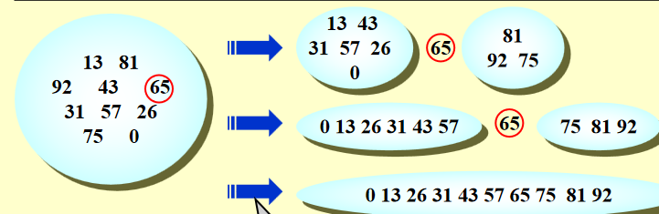
pivot的选取¶
Pivot = median(left, center, right)
用头中尾三个数的中位数逼近整体中位数
划分操作¶
把选中的Povit放到最后一位
用i ++和j --寻找逆序对并交换，一次交换消除两个逆序对，直到i和j遍历了整个序列，将pivot插入二者之间
适用情况¶
- 当N很小(<=20)时，快速排序比插入排序慢
- 故当N很小时cutoff采用其他方法
具体实现¶
void Quicksort( ElementType A[ ], int N )
{
Qsort( A, 0, N - 1 );
/* A: the array */
/* 0: Left index */
/* N – 1: Right index */
}
/* Return median of Left, Center, and Right */
/* Order these and hide the pivot */
ElementType Median3( ElementType A[ ], int Left, int Right )
{
int Center = ( Left + Right ) / 2;
if ( A[ Left ] > A[ Center ] )
Swap( &A[ Left ], &A[ Center ] );
if ( A[ Left ] > A[ Right ] )
Swap( &A[ Left ], &A[ Right ] );
if ( A[ Center ] > A[ Right ] )
Swap( &A[ Center ], &A[ Right ] );
/* Invariant: A[ Left ] <= A[ Center ] <= A[ Right ] */
Swap( &A[ Center ], &A[ Right - 1 ] ); /* Hide pivot */
/* only need to sort A[ Left + 1 ] … A[ Right – 2 ] */
return A[ Right - 1 ]; /* Return pivot */
}
// !!!很重要!!!
void Qsort( ElementType A[ ], int Left, int Right )
{
int i, j;
ElementType Pivot;
if ( Left + Cutoff <= Right )
{
/* if the sequence is not too short */
Pivot = Median3( A, Left, Right ); /* select pivot */
i = Left;
j = Right – 1; /* why not set Left+1 and Right-2? */
for( ; ; )
{
while ( A[ + +i ] < Pivot ) { } /* scan from left */
while ( A[ – –j ] > Pivot ) { } /* scan from right */
if ( i < j ) Swap( &A[ i ], &A[ j ] ); /* adjust partition */
else break; /* partition done */
}
Swap( &A[ i ], &A[ Right - 1 ] ); /* restore pivot */
Qsort( A, Left, i - 1 ); /* recursively sort left part */
Qsort( A, i + 1, Right ); /* recursively sort right part */
} /* end if - the sequence is long */
else /* do an insertion sort on the short subarray */
InsertionSort( A + Left, Right - Left + 1 );
}
非递归实现就是自己找left和right
复杂度分析¶
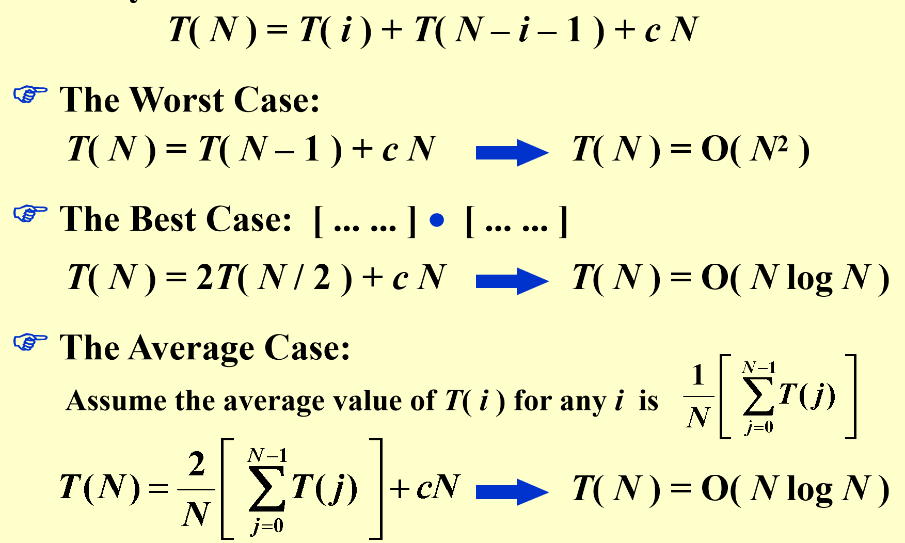
Read Figure 6.16 on p.214 for the 5th algorithm on solving kth largest problem.
大型结构体排序（表排序）- table sort¶
避免大规模的copy，将指针字段添加到结构中并交换指针——间接排序。如果确实有必要，最后再重新安排结构。 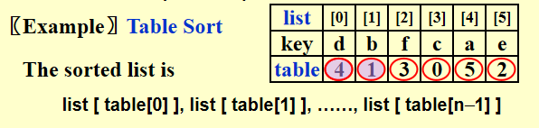
节省空间复杂度的重排方法： 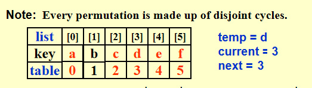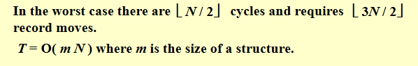
任意排序的lower bound¶
任何基于比较排序的算法在最坏情况下的计算时间必须为\(\Omega(NlogN)\)
证明：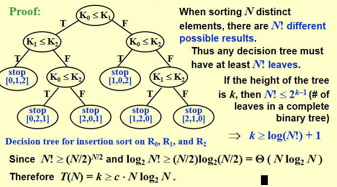
树的最小高度为\(NlogN\)
桶排序和基数排序 - Bucket Sort and Radix Sort¶
桶排序¶
Algorithm
{
initialize count[ ];
while (read in a student’s record)
insert to list count[stdnt.grade];
for (i=0; i<M; i++) {
if (count[i])
output list count[i];
}
}
\(T(N,M) = O(M+N)\)
基数排序¶
- 从末位开始桶排序
- 从左到右倒二位排序
- ...递归
- 直到排到第一位
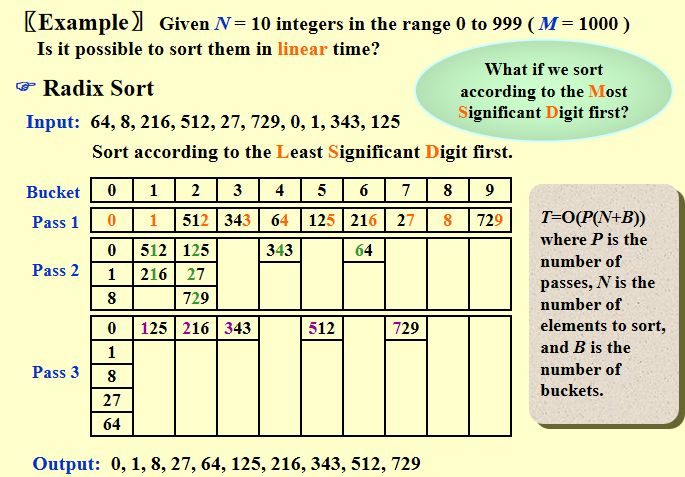
基数定义:
分类：
- MSD

- LSD
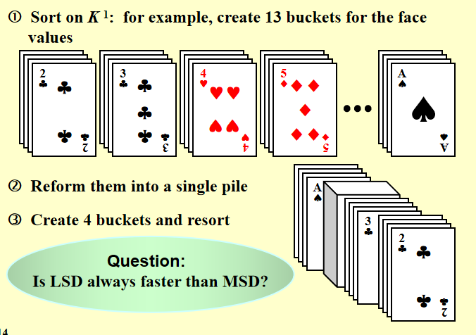
Hashing¶
核心思想：search by formula - 有点类似蛛网图的查找
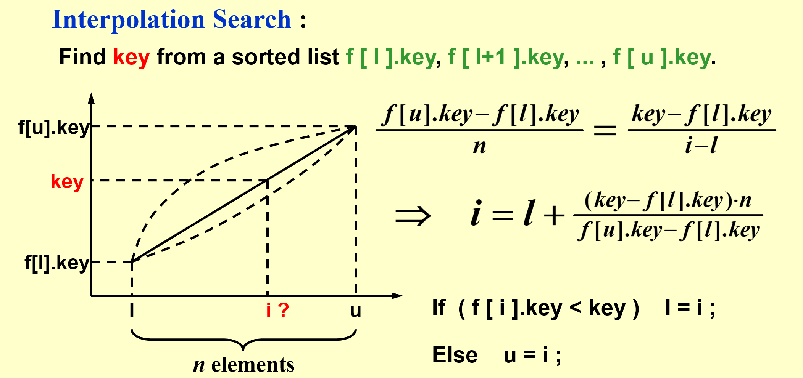
Hash Tables¶
hash function f(x) - 把一个元素map到一个bucket里面去的映射
-
easy to compute
-
最小化collision
-
Probability(\(f(x)=i\)) = 1/b - uniform hash function
-
hash function 的选取
例：字符串的hash function
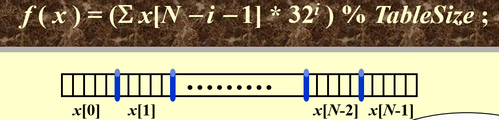
Index Hash3( const char *x, int TableSize )
{
unsigned int HashVal = 0;
while( *x != '\0' ) HashVal = ( HashVal << 5 ) + *x++;
return HashVal % TableSize;
}
loading density \(\lambda = n/(s*b)\) - 反应拥挤程度，和running time相关

collision - 不同的identity的hash function的value是一样的
overflow - hash a new identifier into a full bucket
时间复杂度：没有overflow的情况下，\(T_{search}=T_{insert}=T_{delete}=O(1)\)
但是如果实现不好，有很多overflow的话，就会变成线性的
Seperate Chaining¶
用链表解决collision问题
struct ListNode;
typedef struct ListNode *Position;
struct HashTbl;
typedef struct HashTbl *HashTable;
struct ListNode {
ElementType Element;
Position Next;
};
typedef Position List;
/* List *TheList will be an array of lists, allocated later */
/* The lists use headers (for simplicity), */
/* though this wastes space */
struct HashTbl {
int TableSize;
List *TheLists;
};
- 创建一个空table
HashTable InitializeTable( int TableSize )
{
HashTable H;
int i;
if ( TableSize < MinTableSize )
{
Error( "Table size too small" );
return NULL;
}
H = malloc( sizeof( struct HashTbl ) ); /* Allocate table */
if ( H == NULL ) FatalError( "Out of space!!!" );
H->TableSize = NextPrime( TableSize ); /* Better be prime */
H->TheLists = malloc( sizeof( List ) * H->TableSize ); /*Array of lists*/
if ( H->TheLists == NULL ) FatalError( "Out of space!!!" );
for( i = 0; i < H->TableSize; i++ )
{ /* Allocate list headers */
H->TheLists[ i ] = malloc( sizeof( struct ListNode ) ); /* Slow! */
if ( H->TheLists[ i ] == NULL ) FatalError( "Out of space!!!" );
else H->TheLists[ i ]->Next = NULL;
}
return H;
}
- 查找
Position Find ( ElementType Key, HashTable H )
{
Position P;
List L;
L = H->TheLists[ Hash( Key, H->TableSize ) ]; //Hash是我的Hash Function
P = L->Next;
while( P != NULL && P->Element != Key ) /* Probably need strcmp */
P = P->Next;
return P;
}
- 插入
void Insert ( ElementType Key, HashTable H )
{
Position Pos, NewCell;
List L;
Pos = Find( Key, H );
if ( Pos == NULL )
{
/* Key is not found, then insert */
NewCell = malloc( sizeof( struct ListNode ) );
if ( NewCell == NULL ) FatalError( "Out of space!!!" );
else
{
L = H->TheLists[ Hash( Key, H->TableSize ) ];
NewCell->Next = L->Next;
NewCell->Element = Key; /* Probably need strcpy! */
L->Next = NewCell;
}
}
}
在这种算法情况下，\(\lambda\)≈1
Open Addressing¶
整体算法框架：
Algorithm: insert key into an array of hash table
{
index = hash(key); // hash table 对应的 bucket
initialize i = 0 // collision probing 的次数
while ( collision at index )
{
index = ( hash(key) + f(i) ) % TableSize; // 不同的probing算法只是f(i)不一样
if ( table is full ) break;
else i ++;
}
if ( table is full ) ERROR (“No space left”);
else insert key at index;
}
\(\lambda\)≈0.5
1. Linear Probing¶
\(f(i)=i\)
2. Quadratic Probing¶
\(f(i)=i^2\)
定理1：
条件：
- quadratic probing is used
- the table size is prime
- the table is at least half empty
结论：
- a new element can always be inserted
定理2：
- the table size is a prime of the form 4k + 3 \(\rightarrow\) the quadratic probing \(f(i)=\)±\(i^2\) can probe the entire table
查找：
Position Find ( ElementType Key, HashTable H )
{
Position CurrentPos;
int CollisionNum;
CollisionNum = 0;
CurrentPos = Hash( Key, H->TableSize );
while( H->TheCells[ CurrentPos ].Info != Empty &&
H->TheCells[ CurrentPos ].Element != Key )
{
CurrentPos += 2 * ++CollisionNum - 1; // 相当于+i^2，但是利用了和上一轮结果的关系，这样更快
if ( CurrentPos >= H->TableSize ) CurrentPos -= H->TableSize;
}
return CurrentPos;
}
插入：
void Insert ( ElementType Key, HashTable H )
{
Position Pos;
Pos = Find( Key, H );
if ( H->TheCells[ Pos ].Info != Legitimate ) // 在查找中因为此位置元素没有key而返回的pos
{
/* OK to insert here */
H->TheCells[ Pos ].Info = Legitimate;
H->TheCells[ Pos ].Element = Key; /* Probably need strcpy */
}
}
删除 - lazy deletion，在rehashing的时候正式执行删除
次聚集问题 - 在\(\lambda\)比较大的时候会出现
quadratic hashing = open addressing + quadratic probing
3. Double Hashing¶
$f(i)=i*hash_2(x) $ // \(hash_2( x )\) is the 2nd hash function
tip: \(hash_2(x)=R-(x\% R)\) with R a prime smaller than TableSize, will work well.
Rehashing¶
做法：
- Build another table that is about twice as big;
- Scan down the entire original hash table for non-deleted elements;
- Use a new function to hash those elements into the new table.
什么时候需要？
- As soon as the table is half full
- When an insertion fails
- When the table reaches a certain load factor - 因为\(\lambda\)越大，时间复杂度更高，所以对性能有要求的话可能就在一个给定的load factor的时候就执行rehashing了